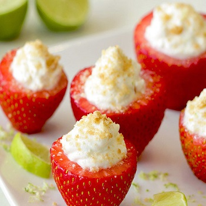
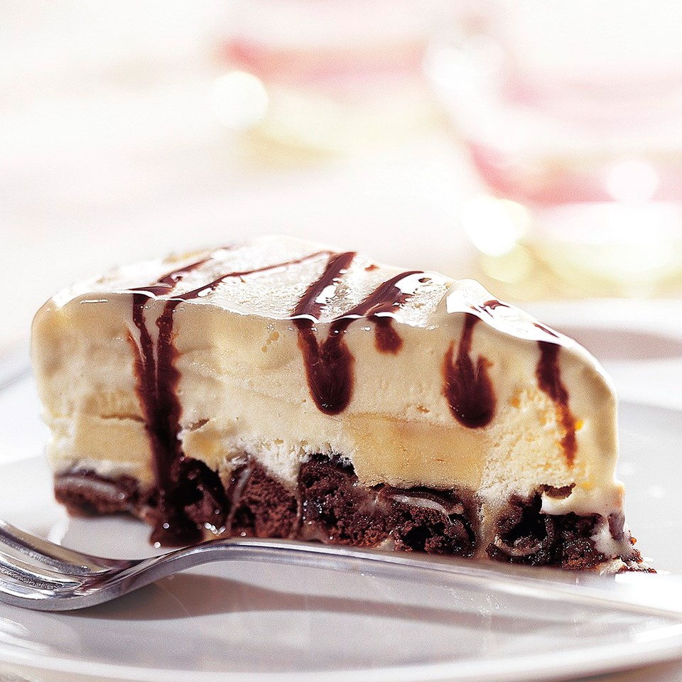
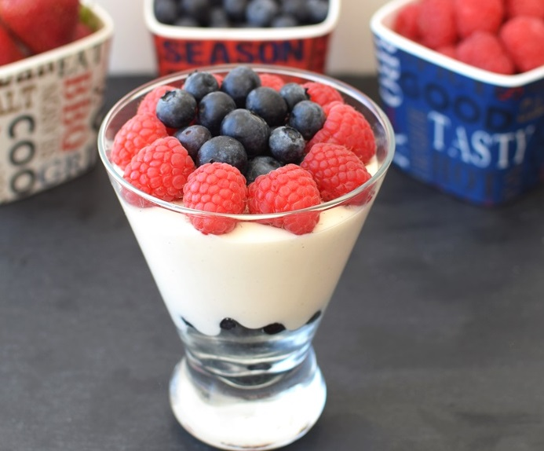

|  |
Key Lime Strawberries
- 10 large strawberries
- 3 tbsp. light whipped topping
- 2 tbsp. fat-free plain Greek yogurt
- 2 tbsp. light/reduced fat cream cheese, room temperature
- 1 packet no-calorie sweetener
- 1 1/2 tsp. lime juice
- 1/2 tsp. lime zest
- 1/4 tsp. vanilla extract
- 1 graham cracker (1/4 sheet), finely crushed
- Slice the stem ends off the strawberries, about 1/2 inch below the stem, revealing an opening in each berry. Use a narrow spoon to remove about half of the flesh inside each berry, allowing room for filling.
- In a small bowl, combine all remaining ingredients except graham cracker.
- Spoon yogurt mixture into a bottom corner of a plastic bag; snip off the tip of that corner to create a small hole, and squeeze the mixture into the strawberries.
- Sprinkle with crushed graham cracker.
|
|  |
Ice Cream Pie
- 1 (6.75 ounce) package fat-free devils food cookie cakes (12 cookies)
- 1/4 cup peanut butter
- 1/4 cup hot wataer
- 1 cup sliced bananas
- 4 cups low-fat or light vanilla, chocolate or desired flavor ice cream, softened
- 3 tablespoons fat-free, sugar-free hot fudge ice cream topping
- Coarsely chop cookies. Place cookie pieces in the bottom of an 8-inch springform pan. Whisk together peanut butter and hot water in a small bowl until smooth. Drizzle evenly over cookies.
- Top with banana slices and carefully spoon ice cream evenly over all. Spread ice cream until smooth on top. Cover with plastic wrap or foil and freeze for 8 hours or until firm.
- Let stand at room temperature for 10 minutes before serving. Remove the sides of the pan; cut into wedges. Drizzle fudge topping over wedges.
|
|  |
Yogurt Mousse
- 3/4 cup raw cashews
- 1 cup unsweetened coconut milk yogurt
- 1 and a half to 2 tablespoons honey
- 1 tablespoon fresh-squeezed lemon juice
- Generous pinch salt
- 1 inch vanilla bean or 1/2 teaspoon pure vanilla flavoring
- Place the cashews in your spice grinder or small food processor and whiz until finely ground / powdered.
- Place the ground cashews, yogurt, honey or agave, lemon juice, seeds scraped from the vanilla bean or vanilla flavoring, and salt in your blender and puree about 30 seconds or until smooth. You want to avoid blending too long, as it can heat up the yogurt!
- Pour into 3 serving dishes, cover and refrigerate for at least 4 hours or overnight. It will keep for about 3 days in the refrigerator and the flavor improves after a night of chilling.
|